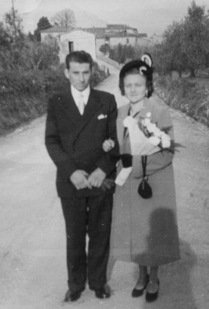

Quercegrossa (Ricordi e memorie)
CAPITOLO II - FAMIGLIE DEL '900
Indice dei Capitoli
Indice Famiglie del '900
PACENTI (1906-1909) casieri; Gallozzole.
Casiere alle Gallozzole dal 6 dicembre 1906 al 6 febbraio 1909 Giuseppe Pacenti fu Francesco era accompagnato soltanto dalla moglie. Venne messo in partenza dopo poco più di due anni con destinazione Genova e segnato come commerciante.
PACINI (1909-1910); salariati; Gallozzole.
Altro operante alle Gallozzole, Angiolo Pacini fu Giacomo con la sua famiglia di sei persone vi entra il 28 luglio 1909. Il 5 giugno dell'anno successivo si sposò a Quercegrossa la figlia Annina con un Sampieri di Pilli. Partì il 2 maggio 1911 lasciando l’abitazione a Onorato Manganelli.
PADOVANI (1903-1906); mezzadri; Poggiobenichi.
Si era sposato a Quercegrossa nel 1872 con Annunziata Milanesi e trenta anni più tardi Pasquale Padovani del fu Angelo vi tornava di casa al podere di Poggiobenichi sempre con accanto Annunziata che gli aveva dato sei figli, da Adamo di 25 anni a Carlotta, Angelo, Assunta, Savino e Cesare di 9. Conviveva con loro l’anziano fratello di Pasquale, Agostino, di 80 anni. Tre anni soltanto poi ripartirono.
PAGLIANTINI CARLO (1956-1982); mezzadri/salariati;
Podernuovo del Castellare; da Fagnano.
La casa colonica del Castellare, quella che era stata di Masiero, è inabitabile perché sta cadendo a pezzi. Non può quindi ospitare più nessuno. Il dottor Emilio Bindi decide di costruire una nuova abitazione per il mezzadro che coltiverà le terre intorno al Castellare. Individua il terreno lungo la SS 222 nel campo del Losi a pochi metri dall'Arginanino. Iniziano i lavori, è l'anno 1955, e nel frattempo cerca una famiglia, una buona famiglia di contadini che tornerà nella nuova casa. Ce n'è una a Fagnano che dal 1940 coltiva un podere della fattoria, “appena sufficiente per campare”, e quindi sta cercando di cambiare. Sono i Pagliantini, otto persone in tutto. I comuni interessi corrispondono e l'accordo è presto fatto. I Pagliantini inaugureranno l'abitazione di fresca costruzione chiamata "Podernuovo" o anche "Casanova" e sarà anche l'unica famiglia della sua breve storia. Pagheranno come prevede la legge una cauzione, che poi gli sarà restituita.
Carlo Pagliantini e la moglie Giulia Turillazzi
Carlo, il capofamiglia, originario di Radda è stato contadino a Gaiole (Barbistio, podere Bricciano), in Val di Picciola, a Pievasciata e poi a Fagnano dal 1940. Qui nascono le nipoti Paola (1953) di Duilio e Patrizia di Gino. Il 65enne capoccio sposato con Giulia Turillazzi di Gaiole ha tre figli, Gino (1921) di 34 anni, Duilio, nato a Vertine nel 1925, di 30 anni, Adamo (1930) di 25 anni, e due nuore, entrambe provenienti da famiglie contadine: Maria Bianciardi la sposa di Duilio e Luisa Stazzoni maritata a Gino. Una buona forza di lavoro come si vede, adatta per lavorare un podere di quattordici ettari con una buona stalla e una buona produzione. Lasciato senza rimpianti Fagnano nel 1956 ed essendo ancora da terminare l’abitazione, prendono alloggio provvisoriamente nella casa del fattore al Castellare, quella con accesso dal viale attraverso una rampa di scalette. Finalmente, dopo sei mesi, in casa nuova e la trovano bella e spaziosa, con tutti i servizi indispensabili. C'è anche l'acqua che portata con tubature da Val di Lama arriva alla stalla. I Pagliantini provvederanno essi stessi a prolungarla in cucina perché il Sor Emilio non vuol fare differenze con gli altri contadini. A Quercegrossa gli abitanti dovranno attendere molti anni prima di avere l’acqua in casa.

A destra dell'abitazione, fornita di stalla, magazzino e stanza del segato, c'è, staccato, il forno, costruito alla maniera antica. Adamo è l'unico celibe della famiglia, ma si sposa il 13 ottobre del 1962 con Nara Monciatti a Pontignano. Con le macchine di parenti e quella del noleggiatore Mariani si recano a Castellina in Chianti per il pranzo di nozze, poi tutti a casa. Duilio, invece, si era sposato a Quercegrossa nel 1951 in un sabato di novembre. Anche loro avevano noleggiato dal Mariani col quale tornarono, dopo la cerimonia in chiesa, a Poggiagrilli dai Bianciardi per il pranzo nuziale. Appena concluso, via a Siena a farsi le rituali foto dal Massarelli e poi un bel cinema per finire la giornata. Il giorno successivo, domenica, tutti i parenti sono invitati a festeggiare gli sposi a Fagnano.
Duilio e Maria nel giorno del matrimonio sullo sfondo di Quercegrossa.
Gino, il fratello maggiore, si era sposato nel 1949 a Pontignano.
Appena sette anni il colonato al Podernuovo perché nel 1963 i Pagliantini cessano il rapporto di mezzadria, ma continuano come operai agricoli della fattoria dell'Arginano mantenendo l'alloggio nel Podere pagando un affitto di 5.000 lire al mese. Gino invece cambia radicalmente e torna a Prato, per l'industria tessile, convinto dalla Cice a intraprendere la nuova avventura. Il 2 febbraio 1967 muore l’anziano Carlo. Adamo e Duilio lasciano l'abitazione di Quercia nel 1982 per trasferirsi a Castellina Scalo, ma continuando a lavorare per l'Arginano ancora per qualche anno.
PAGLIANTINI NELLO (1957 - 1965/66); mezzadri; Paradiso.
Quando i Carli lasciarono il Paradiso di Petroio vennero sostituiti dai Pagliantini entrati nel 1957. La famiglia del capoccio Nello non era parente dei Pagliantini che in quegli anni si trasferirono al podere nuovo del Castellare. Egli aveva avuto dalla moglie Nella una discreta figliolanza e si ricordano Antonietta, Marisa, Elda, Alvaro detto “ Il Gallo” e il più piccolo detto “Picchio”. Di condizione mezzadri devono aver vissuto al Paradiso fino alla metà degli anni Sessanta per poi andarsene per sempre.
Inizio pagina
Indice famiglie del '900
Indice dei Capitoli
|